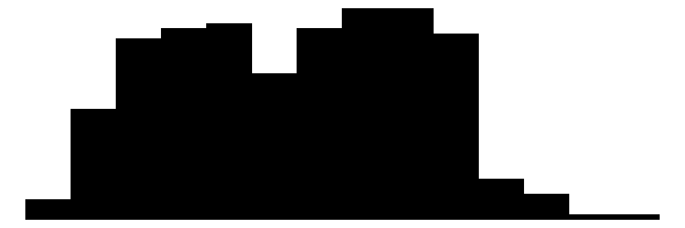

#|label:example-code-chunk
#|output:true
#|warning:false
#|code-line-numbers:true
library(tidyverse)
library(palmerpenguins)
data(penguins)
subset<-penguins|>filter(island=="Dream")Proposal
Introduction
This is an awesome report(Ooms 2023)
Methods
| Col1 | Col2 | Col3 |
|---|---|---|
| ll | ||
This is a test with a number 2

#|label: tbl-summary
#|tbl-cap: Summary of the penguins dataset
library(modelsummary)
penguins|>
select(-species,-island)|>
datasummary_skim()|>
tinytable::style_tt(fontsize=.75)| Unique | Missing Pct. | Mean | SD | Min | Median | Max | Histogram | |
|---|---|---|---|---|---|---|---|---|
| bill_length_mm | 165 | 1 | 43.9 | 5.5 | 32.1 | 44.5 | 59.6 |  |
| bill_depth_mm | 81 | 1 | 17.2 | 2.0 | 13.1 | 17.3 | 21.5 |  |
| flipper_length_mm | 56 | 1 | 200.9 | 14.1 | 172.0 | 197.0 | 231.0 |  |
| body_mass_g | 95 | 1 | 4201.8 | 802.0 | 2700.0 | 4050.0 | 6300.0 |  |
| year | 3 | 0 | 2008.0 | 0.8 | 2007.0 | 2008.0 | 2009.0 |  |
| sex | N | % | ||||||
| female | 165 | 48.0 | ||||||
| male | 168 | 48.8 |
graph TD
A[Start]-->B[Do something]
B-->C{Did it work?}
C-->|Yes|D[End]
C-->|No| E[Do something else]
E-->Bgraph TD
A[Start]-->B[Do something]
B-->C{Did it work?}
C-->|Yes|D[End]
C-->|No| E[Do something else]
E-->B
References
Ooms, Jeroen. 2023. “Askpass: Password Entry Utilities for r, Git, and SSH.” https://CRAN.R-project.org/package=askpass.